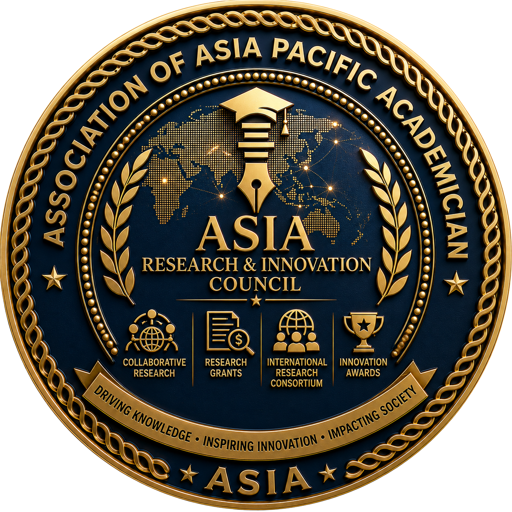

ASIA Research & Innovation Council
Research. Innovation. Impact.
The ASIA Research & Innovation Council (ASIA-RIC) is the official research, innovation, and knowledge advancement authority of the Association of Asia Pacific Academician (ASIA). It serves as the strategic body responsible for fostering research excellence, interdisciplinary collaboration, innovation development, intellectual property creation, knowledge commercialization, and international research partnerships across the Asia-Pacific region.
ASIA-RIC connects universities, research institutions, industries, governments, professional organizations, funding agencies, and communities through an integrated research ecosystem that encourages scientific discovery, evidence-based innovation, technology development, and sustainable solutions for regional and global challenges.
The Council recognizes that research is not merely the production of scientific publications. It is a continuous process of generating knowledge, transforming ideas into innovation, strengthening policy development, supporting industry advancement, and improving the quality of life through measurable societal impact.
As one of ASIA's strategic bodies, ASIA-RIC functions as the driving force for research collaboration, innovation capacity, and academic excellence throughout the ASIA ecosystem.
"To become the leading multidisciplinary research and innovation council in the Asia-Pacific region, advancing scientific excellence, collaborative innovation, and sustainable impact through internationally recognized research ecosystems."
ASIA-RIC is committed to:
Promoting high-quality, ethical, multidisciplinary, and internationally recognized research that advances knowledge across diverse academic fields.
Transforming research outcomes into innovative products, technologies, services, policies, and practical solutions that create measurable value.
Building strategic partnerships among universities, research institutions, industries, governments, funding agencies, and international organizations.
Encouraging continuous generation, dissemination, preservation, and utilization of scientific knowledge for academic and societal advancement.
Strengthening the competencies of researchers, research institutions, and academic communities through training, mentoring, networking, and collaborative learning.
Ensuring research contributes directly to sustainable development, public policy, industry advancement, community empowerment, and global well-being.
ASIA-RIC serves as the official research and innovation platform responsible for:
An integrated research ecosystem consisting of:
The systematic pathway through which ASIA-RIC bridges theoretical academic research ideas into practical applications and societal impacts.
ASIA-RIC supports multidisciplinary research across all academic fields represented by ASIA, including:
Research initiatives are encouraged to address regional priorities while contributing to global scientific knowledge and sustainable development.
Strategic Commitment: ASIA-RIC is committed to building an internationally connected research ecosystem where collaboration accelerates discovery, innovation transforms knowledge into solutions, and research creates measurable academic, economic, environmental, and societal impact for the Asia-Pacific region and the global community.